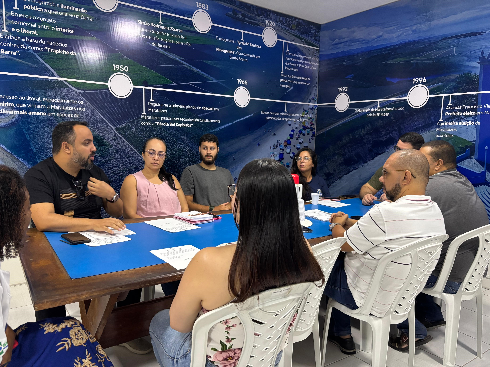

Olá, pessoal! Este é o meu primeiro post no meu site do GitHub Pages.
Jogo do Poder: Traição, Corrupção e a Ilusão da Mudança Em uma pequena cidade brasileira chamada VENTÁRIS, a transição de poder revelou-se um palco de traições e interesses escusos. O governante anterior, mergulhado em delitos e desmandos, deixou um rastro de desordem e pendências que afetaram profundamente a população local. Com sua saída, a esperança de dias melhores renasceu com a eleição de um novo líder político, visto como símbolo de renovação e justiça. No entanto, a realidade mostrou-se mais complexa. Diversos segmentos da sociedade que anteriormente se beneficiavam das práticas corruptas do antigo governo rapidamente alinharam-se ao novo governante. Esses grupos, incluindo empresários influentes, líderes comunitários e até membros da administração pública, buscavam manter seus privilégios e vantagens adquiridas, independentemente das mudanças no comando político. Essa aliança oportunista teve consequências nefastas. O novo governante, cercado por aliados que secretamente minavam sua autoridade, enfrentou dificuldades para implementar reformas e políticas públicas efetivas. A corrupção, longe de ser erradicada, adaptou-se e continuou a prosperar sob novas máscaras. Enquanto isso, a população, já fragilizada pelos desmandos anteriores, continuou a sofrer com a falta de serviços básicos, infraestrutura precária e a sensação de abandono por parte daqueles que deveriam representá-la. Esse cenário evidencia uma triste realidade presente em diversas esferas políticas: a perpetuação de práticas corruptas e a busca incessante por interesses pessoais, mesmo em momentos que deveriam ser de mudança e renovação. A traição ao novo governante por parte de seus supostos aliados não apenas comprometeu sua gestão, mas também aprofundou a desilusão e o sofrimento da comunidade local. Para romper esse ciclo vicioso, é imperativo que haja uma conscientização coletiva sobre a importância da ética e da transparência na política. A sociedade civil deve se mobilizar para exigir responsabilidade e integridade de seus representantes, enquanto mecanismos de fiscalização e controle precisam ser fortalecidos para coibir práticas ilícitas. Somente assim será possível construir uma governança que verdadeiramente atenda aos anseios e necessidades da população, promovendo justiça social e desenvolvimento sustentável." VENTÁRIS é uma cidade fictícia e seu nome foi assim dado, pois ela está em costa marítima e venta bastante, sendo seus ventos muito fortes em certa época do ano" . "O conteúdo apresentado tem caráter simbólico e não se refere a nenhuma realidade específica." "A imagem é apenas uma ilustração para apresentar visualmente as necessidades à saúde da cidade de VENTÁRIS"